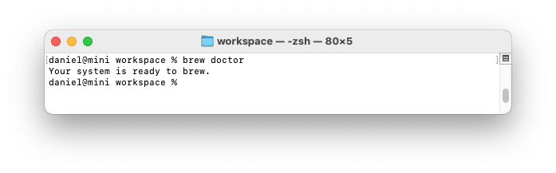

Python has several different versions and a number of ways it can be set up on each operating system. This appendix is useful if the approach in Chapter 1 didn’t work, or if you want to install a different version of Python than the one that came with your system.
Operating Systems
Python on Linux
Python is included by default on almost every Linux system, but you might want to use a different version than the default. If so, first find out which version of Python you already have installed.
Finding the Installed Version in Linux
Open a terminal window and issue the following command:
$ python --version
Python {}
These result shows that the default version is 2.7.6. However, you might also have a version of Python 3 installed. To check, enter the following command:
$ python3 --version
Python 3.5.0
We see Python 3.5.0 is also installed. It’s worth running both commands before you attempt to install a new version.
Installing Python 3 on Linux
If you don’t have Python 3, or if you want to install a newer version of
Python 3, you can install it in just a few lines. We’ll use a package
called deadsnakes, which makes it easy to install multiple versions of
Python:
$ sudo add-apt-repository ppa:fkrull/deadsnakes
$ sudo apt-get update
$ sudo apt-get install python3.5
These commands will install Python 3.5 to your system. The following code will start a terminal session running Python 3.5:
$ python3.5
>>>
You’ll also want to use this command when you configure your text editor to use Python 3 and when you run programs from the terminal.
Python on macOS
Python is already installed on most macOS systems, but you might want to use a different version than the default. If so, first find out which version of Python you already have installed.
Finding the Installed Version in macOS
Open a terminal window, and enter the following command:
$ python –version
Python 2.7.6
You should also try running the command python3 –version. You’ll probably get an error message, but it’s worth checking to see if the version you want is already installed.
Using Homebrew to Install Python 3
If you only have Python 2 installed, or if you have an older version of Python 3, you can install the latest version of Python 3 using a package called Homebrew.
Installing Homebrew
Homebrew depends on Apple’s Xcode package, so open a terminal and run this command:
$ xcode-select –install
Click through the confirmation dialogs that pop up (this may take a while, depending on the speed of your connection). Next, install Homebrew:
$ ruby -e “$(curl -fsSL
https://raw.githubusercontent.com/Homebrew/install/
master/install)”
You can find this command on the front page of the Homebrew site at http://brew.sh/. Make sure you include a space between curl -fsSL and the URL.
| NOTE |
|---|
The -e in this command tells Ruby (the programming language Homebrew is written in) to execute the code that’s downloaded here. You should only run commands like this from sources you trust. To confirm that Homebrew installed correctly, run this command:$ brew doctor Your system is ready to brew.  This output means you’re ready to install Python packages through Homebrew. |
Installing Python 3
To install the latest version of Python 3, enter the following command:
$ brew install python3
Let’s check which version was installed using this command:
$ python3 –version
Python 3.5.0
$
Now you can start a Python 3 terminal session using the command python3, and you can use the python3 command to configure your text editor so it runs Python programs with Python 3 instead of Python 2.
Python on Windows
Python isn’t usually included by default on Windows, but it’s worth checking to see if it exists on the system. Open a terminal window by right-clicking on your desktop while holding the SHIFT key, and then select Open Command Window Here. You can also enter command into the Start Menu. In the terminal window that pops up, run the following command:
> python –version
Python 3.5.0
If you see output like this, Python is already installed, but you still might want to install a newer version. If you see an error message, you’ll need to download and install Python.
Installing Python 3 on Windows
Go to http://python.org/downloads/ and click the version of Python you want. Download the installer, and when you run it make sure to check the Add Python to PATH option. This will let you use the python command instead of having to enter your system’s full path to python, and you won’t have to modify your system’s environment variables manually. After you’ve installed Python, issue the python –version command in a new terminal window. If it works, you’re done.
Finding the Python Interpreter
If the simple command python doesn’t work, you’ll need to tell Windows where to find the Python interpreter. To find it, open your C drive and find the folder with a name starting with Python (you might need to enter the word python in the Windows Explorer search bar to find the right folder). Open the folder, and look for a file with the lowercase name python. Right-click this file and choose Properties; you’ll see the path to this file under the heading Location.
In the terminal window, use the path to confirm the version you just installed:
$ C:\\Python35\python –version
Python 3.5.0
Adding Python to Your Path Variable
It’s annoying to type the full path each time you want to start a Python terminal, so we’ll add the path to the system so you can just use the command python. If you already checked the Add Python to PATH box when installing, you can skip this step. Open your system’s Control Panel, choose System and Security, and then choose System. Click Advanced System Settings. In the window that pops up, click Environment Variables.
In the box labeled System variables, look for a variable called Path. Click Edit. In the box that pops up, click in the box labeled Variable value and use the right arrow key to scroll all the way to the right. Be careful not to overwrite the existing variable; if you do, click Cancel and try again. Add a semicolon and the path to your python.exe file to the existing variable:
%SystemRoot%\system32\…\System32\WindowsPowerShell\v1.0\;C:\Python34
Close your terminal window and open a new one. This will load the new Path variable into your terminal session. Now when you enter python –version, you should see the version of Python you just set in your Path variable. You can now start a Python terminal session by just entering python at a command prompt.
Python Keywords and Built-in Functions
Python comes with its own set of keywords and built-in functions. It’s important to be aware of these when you’re naming variables. One challenge in programming is coming up with good variable names, which can be anything that’s reasonably short and descriptive. But you can’t use any of Python’s keywords, and you shouldn’t use the name of any of Python’s built-in functions because you’ll overwrite the functions.
In this section we’ll list Python’s keywords and built-in function names, so you’ll know which names to avoid.
Python Keywords
Each of the following keywords has a specific meaning, and you’ll see an error if you try to use them as a variable name.
False class finally is return
None continue for lambda try
True def from nonlocal while
and del global not with
as elif if or yield
assert else import pass
break except in raise
Python Built-in Functions
You won’t get an error if you use one of the following readily available built-in functions as a variable name, but you’ll override the behavior of that function:
abs() divmod() input() open() staticmethod()
all() enumerate() int() ord() str()
any() eval() isinstance() pow() sum()
basestring() execfile() issubclass() print() super()
bin() file() iter() property() tuple()
bool() filter() len() range() type()
bytearray() float() list() raw_input() unichr()
callable() format() locals() reduce() unicode()
chr() frozenset() long() reload() vars()
classmethod() getattr() map() repr() xrange()
cmp() globals() max() reversed() zip()
compile() hasattr() memoryview() round() __import__()
complex() hash() min() set() apply()
delattr() help() next() setattr() buffer()
dict() hex() object() slice() coerce()
dir() id() oct() sorted() intern()
NOTE
In Python 2.7 print is a keyword, not a function. Also, unicode() is not available in Python 3. Neither of these words should be used as a variable name.